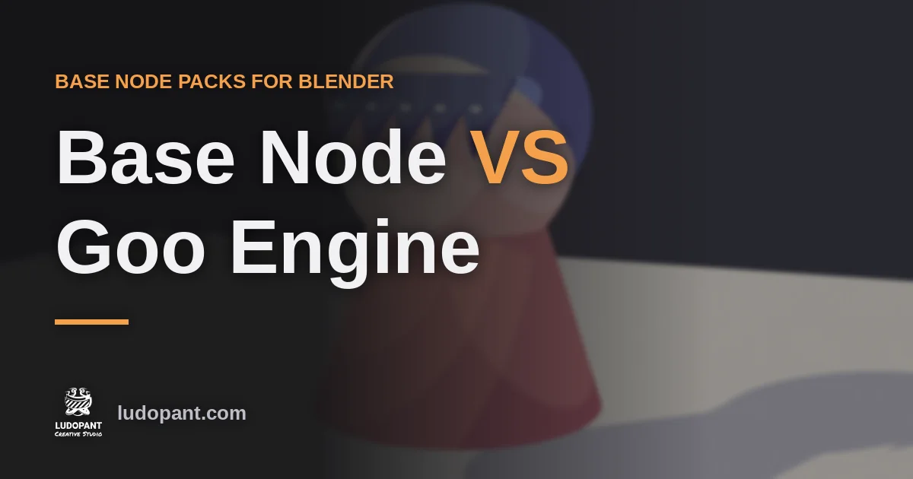

Products › Base Node Packs › VS › Goo Engine
Base Node VS Goo Engine

Goo Engine, by DillonGoo Studios. A fork of Blender for anime and NPR rendering, made by DillonGoo Studios for their own productions. Its source is open under the GPL; the prebuilt download comes with their Patreon. Its main branch is Blender 4.1.[1,2]
Base Node is a text language for Blender's node trees, with a free add-on and paid packs of tested node groups. Goo Engine changed Blender itself: four shader nodes and light groups added to EEVEE, in a build of its own. Blender 5.3 now gives a material each light on its own through its lighting nodes, and Toon & Anime is written on them: cel materials as .bn text, in the Blender everyone runs.
Of the 3 capabilities below, Base Node covers 2, covers 0 in part and does not cover 1. The Goo Engine side of each row was checked on DillonGoo Studios's pages on 2026-11-20; the numbers link to them.
What Goo Engine does, and how Base Node does it
| What Goo Engine does | Goo Engine | Base Node + pack | Status |
|---|---|---|---|
| Shading per light | The Shader Info node gives the material its diffuse shading, cast shadows, self shadows and ambient lighting, for the lights together; light groups choose which lights reach an object.[3,1] | Each light is shaded on its own through Blender 5.3's lighting nodes: its tones, threshold and intensity, read on the light's custom properties.
| Covered |
| Tones and shadow colour | The shading and shadows of Shader Info are values for the material to cut and colour, as its artist builds it.[3] | Two to eight hard tones per light, a shadow colour per material and one per light, a hard highlight and rim lights, ready as one material graph.
| Covered |
| Screen space | The Screenspace Info node reads the scene's colour and depth behind the surface; the Curvature node gives a scene curvature and a scene rim.[4,5] | None in the material: Blender 5.3 has no node for them. | Not covered |
Where Goo Engine is ahead
- Screenspace Info reads the scene's colour and depth inside a material, for screen-space lines and effects.[4]
- The Curvature node gives a scene curvature and rim, sampled in screen space.[5]
- Set Depth offsets the depth of a shader, to layer parts of a face or hair.[6]
- Light groups choose which lights reach which objects.[1]
When to choose which
Choose Goo Engine when
You want screen-space shading in the material (the scene's colour, depth and curvature), a depth offset per material, and a build your studio already knows.
Choose Base Node when
You want anime shading in stock Blender 5.3: tones, highlight and shadow colour cut per light and set on each light, in a text you can read and diff, with no fork to install or keep up.
The packs
- Toon & AnimeAnime cel shading lit light by light, for EEVEE in Blender 5.3.
Sources
- https://github.com/dillongoostudios/goo-engine
- https://github.com/dillongoostudios/goo-engine/blob/goo-engine-main/source/blender/blenkernel/BKE_blender_version.h
- https://github.com/dillongoostudios/goo-engine/blob/goo-engine-main/source/blender/nodes/shader/nodes/node_shader_shader_info.cc
- https://github.com/dillongoostudios/goo-engine/blob/goo-engine-main/source/blender/nodes/shader/nodes/node_shader_screenspace_info.cc
- https://github.com/dillongoostudios/goo-engine/blob/goo-engine-main/source/blender/nodes/shader/nodes/node_shader_curvature.cc
- https://github.com/dillongoostudios/goo-engine/blob/goo-engine-main/source/blender/nodes/shader/nodes/node_shader_set_depth.cc
Goo Engine is a trademark of DillonGoo Studios, or of its owner. Other product names are trademarks of their owners. Ludopant and Base Node are not affiliated with or endorsed by them; the names are used only to compare. All comparisons.